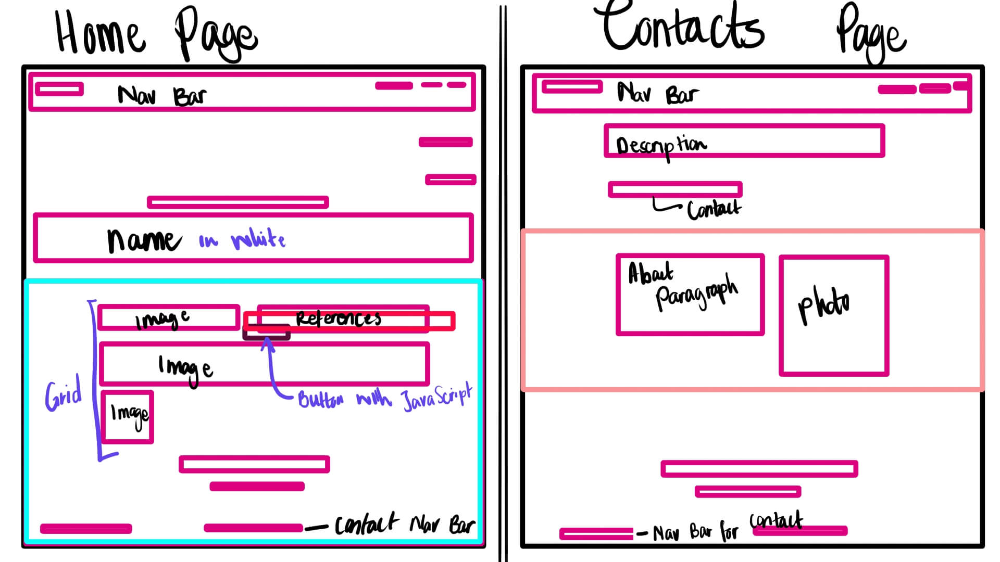

THE DESIGN STYLE
Design Section
Original Wireframes:


- 1 - this is the Logo K.MM. found in the nav bar.
- 2 - this is the entire nav bar in a white see through colour.
- 3 - this is the nav bar menu, e.g., Home, About.
- 4 - this is the Headings in bold font.
- 5 - this is titles in bold font and descriptions about me.
- 6 - this is the mini nav bar and background colour.
- 7 - this is a link to the next page.
- 8 - this is the paragraph and subtitle.
- 9 - this is the side bar and portfolio section.
- 10 -this is nav mini bar.
- 11 - this is a background image.
- 12 - this is the title to the dev blog page.
- 13 - this is the weekly dev blog buttons.
- 14 and 15 - these are were the dev blogs will go.
Goal Alignment:
The goal I aimed to achive was a simple, Was an elegant, simple yet still sophisticated website where the user could look through it and left with at least a slightly memorable impression. Initially, I aimed at using only two colours in my colour scheme – Black and white. This would make it easier for me to focus working on the elements that made the content stand out to the user and create a memory. As a student and this being my first go at web designing, the goal was to merely incorporate all that I learned especially with the importance of UX and UI, and not make the user feel that viewing this website leaves them in a totally confused state. So, I do feel that I have reached my goal of keeping my colour schemes to a minimum, using simple layouts and understandable layouts - I kept it simple stupid!
Information Structure:
These images inform about the design process from the mindp-mapping stages. Both in the form of a mind map and a flow chart entailing details on what each stage of each page design is about.


User Flow: Screens, Behaviours and Decisions:
In terms of user flow, I made use of the important conventional UI elements of web design as they are essential elements in making your website easy to use, understand and go through – easing the experience of viewing the website and contributing to the user flow. In terms of the different screen types, the most changes that occurred were in trying to ensure that the change in layout did not change the way the website was meant to be experienced originally. In the Homage, I successfully managed to create wireframes that merely moved the elements to the centre without changing the overall layout and making the homepage look completely different. On the other pages, what mostly changed was the About Menu navigation bar – the rest of the elements mostly moved to the centre and adjusted in size and space layout.
Selected Interface Elements:
For the interface elements, I wanted simplicity – as simple as possible and therefore I kept the use of curved and border-radius shapes to a minimum. I used straight lines, dark and thin, dark to emphasize the importance of that element and get the eye to focus on that – this can be seen almost everywhere on the pages’ elements. The title boxes, the nav bars, and the images. Etc, to keep it less confusing for me, at least for now. I used the element of space a lot in terms of dividing the sections with enough ‘white space’ and aiming for a less clustered layout.
Reference material:
Below are screenshots to my referenced wedsite inspiration. Website from Anna Sabatini Sabbanna.


Style Guide
Goal and Aesthetic:
My goal is to create simplicity, elegance, understandability in the creation of my wedsite.
Visual elements selected:
The visual elemmnts selected were Line and shape - use of straight line to create the seeming of cleaness and simplicty. Colour - use of black and white as the main aesthetic, added a touch of pink and green for a sense of fun, creativity, joy. Space - use of sufficient white space, as there is balance in the layout and overall flow.
Final Sketches:


WireFrames - Annotated:


WireFrames - Updated:
Colour- scheme:

Get in Touch!
an aspiring web designer keen to learn more.